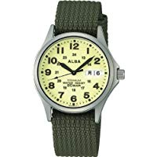
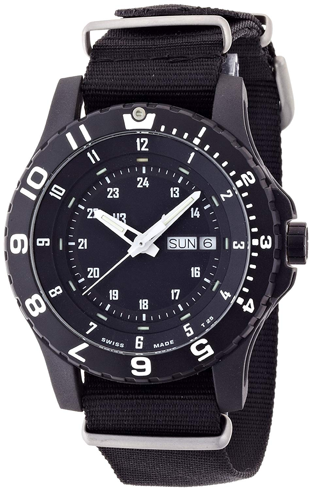
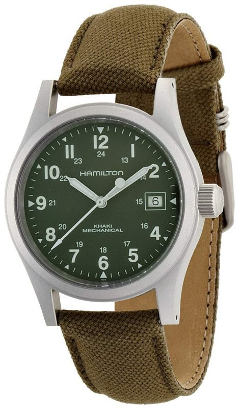
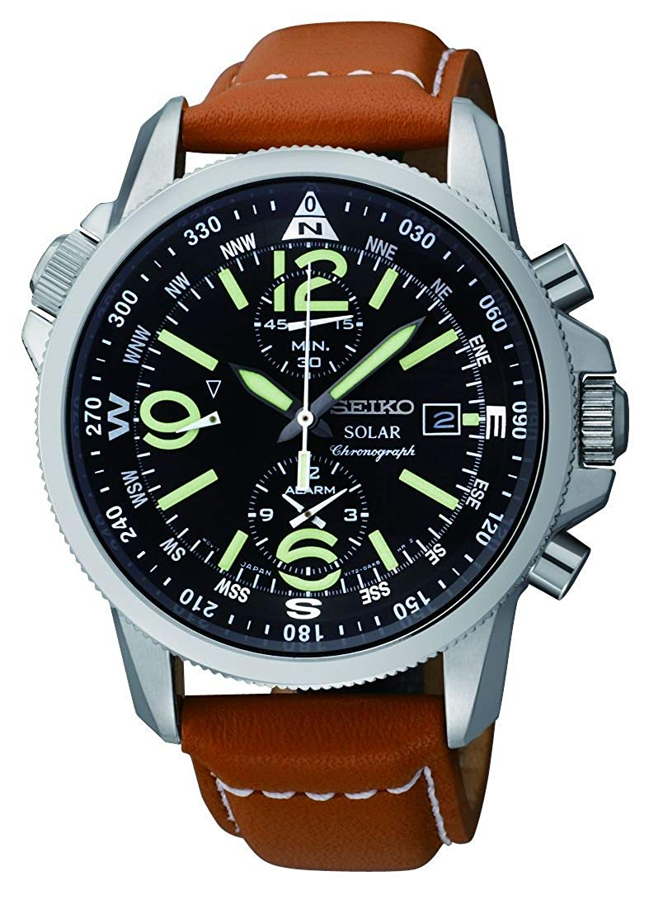

Q1.アニメは好き嫌いなしに平等に見れる
Q2.時計を買うなら腕時計に限った物でなくてもよい
Q3.３度のおやつよりアニメが好きだ
Q4.とあるシリーズだと初春ちゃんが一番の至宝
Q5.結局の所、時計とアニメのコラボレーションの
企画は理解したが、時計ならちゃんとした物が欲しい

製品名にメンズとありますが、普通に女性でも着用できる汎用型です。暗所でも全面発光する文字盤があるおかげで時間の確認を常にできる利点があり、さらにチタンケースということもあってとても軽く、時計をはめる上で苦にならない所がポイントです。ミリタリー時計の中じゃ迫力に劣るかもしれませんが、ミリタリー時計としてバランスが良く、耐久、防水、暗所などの必要水準を満たしています。購入の目安に入れても良いでしょう。

アメリカ国防省の定める最新規格(MIL-G)に基づいて開発されたミリタリーウォッチです。二重構造のケースが特徴。スチールのインナーケースをグラスファイバーのアウターケースで保護しており、高い耐久性を誇ります。時針や分針には自己発光システムを搭載しており、暗い場所での視認性も抜群。また、20気圧防水を備えているので、水仕事や釣りなどアウトドア全般で気軽に使用できる腕時計を探している方におすすめです。一見ゴツイように見えますが、全体が黒いので女性でも着けやすいデザインとして意外と人気です。ゴツクても良いじゃないですか。

アメリカ陸軍に供給していた軍用時計をルーツとするミリタリーウォッチです。無駄な装飾を省いた質実剛健さが魅力。文字盤に白文字であしらわれたインデックスは視認性が高く、風防には傷が付きにくいサファイアクリスタルガラスを採用しています。ムーブメントは手巻き式で、水仕事や洗顔で濡れても平気な5気圧防水。シンプルなデザインはビジネスシーンで着用しても違和感がないため、さまざまな場面で活躍します。もちろん女性も服装のコーディネート次第で使える汎用性の高いものとなっています。

文字盤や針の雰囲気良く、革バンドもチープな印象を受けなくはないですが、全体の色合い的に欧州高級クロノグラフのようなデザイン印象付けさせます。ミリタリーパイロット-クロノグラフモデルとなっていますが、日々の生活や仕事とプライベート用でもとても使いやすく、さまざまな場面で活躍できます。あなたがこれを選ぶのであれば、比較的安価なので購入の目安に入れてもいいかもしれません。